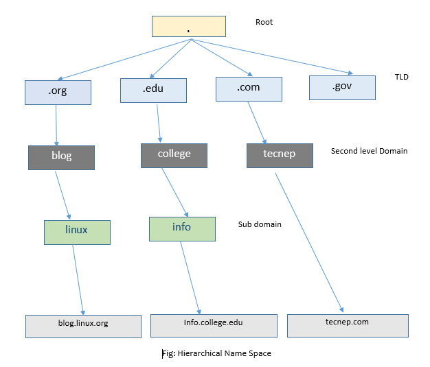
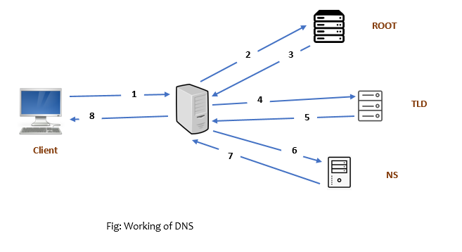

DNS
Domain Name system is distributed database of IP address and associated names which resolve domain name to IP address. Before the concept of DNS, one had to download host file containing host names and IP address. DNS record are hierarchical in internet naming structure with the root at the top.

How DNS work ?
Following picture describe the working of domain name server.

- Suppose you type
tecnep.comin the browser, it send dns query to the ip address set in networking interface. This could be your IPS dns, or resolver set up in your company. Depends on the network setting. - The resolver find
.at the end of any domain saytecnep.comin our example. It forwards the query to root server(Distributed server place at different region of the world). - The root server identify the domain contain
.comwhich can be resolved in COM servers. So, it sends IP address of.comserver to resolver. - The resolver again send the query to .com server to find where is the name server exactly located.
- The COM has the record of name server of the requested domain. So, it sends the IP address of domain name server. At this IP of name server of
tecnep.comis provided to resolver. - The resolver then sends the query to the name server to find out the A record of the domain
tecnep.com - Name server replies the A record of
tecnep.com. Now, the resolver put the record in its cache. - The record is provided to client and browsing start to the hosting server.
DNS queries
a) Recursive Query
Query in which DNS server ask root server, TLD server and authoritative recursively to get IP address is known as recursive query. They are used as caching the records.
b) Non Recurive
They are also called authoritative query which holds actual IP address and immediately returns the record.
DNS Resource Record (RR)
Follow are the basic type of DNS record also called RR.
a) A : Host name to ip address.
b) AAAA : Host name to IPV6 address.
c) CNAME : Give a single computer multiple name for example ftp, web, www etc.
d) MX : To specify the email server responsible for a domain name.
e) NS : Identify the DNS server responsible authoritative for a zone.
f) PRT : IP address to domain name
g) TXT : Hold descriptive text such as contact person, details. Also, SPF, DKIM, DMARC, domain verification record are ketp as TXT record.
h) SOA : Contain NS, email for admin, Refresh, retry expire, Serial Number value.
Digging DNS Record
syntax
dig {domain_name} {record_type} @{DNS_server}
Example,
# Ask A record of tecnep.com in the DNS you set in network interface
dig tecnep.com A
# Ask A record of tecnep.com in the 1.1.1.1 DNS
dig tecnep.com A @1.1.1.1
# Get TXT record
dig tecnep.com TXT
# Only show desired output
dig tecnep.com +short
# All the RR record
dig tecnep.com ANY
# Find PTR record
dig -x
# Trace the record
dig +trace tecnep.com
Termonologies
Zone Transfer
A Primary DNS server has the master copy of a zone and secondary DNS server keep copies of the zone for redundancy. When changes are made to zone data on the primary DNS, these changes must be distributed to secondary DNS server. The process si called zone transfer.
Zone Delegation
The literal meaning of delegation is to give the right to manage the control for some resource or task to other. In case of Domain name server the process is distributed. The resolver ask root , root ask to send to TLD server and finally to the Name server. The process is called zone delegation.
Domain Transfer
Domain transfer or domain name transfer refers to the process of changing the designated registrar of a domain name to another. For example transfering domain from Godaddy to namecheap.
DNS hosting
Keeping your DNS records or may be registering a domain in domain registrar.
Domain Propagation
The process or updating every server across the web with new information. That’s a lot of servers that require updating and such, there’s lag between when the changes are made and when all the server have registered it.
Split-Brain DNS
Split-Brain DNS is a DNS in which two zones for the same domain is set, one to be used by the internal network, the other used by the external network. Internal network for the organization and external user - typically users on the Internet. This facility can provide a mechanism for security and privacy management.
Pratik Gautam pratikgautm@gmail.com